Mineralien & Gesteinssammlung
Was sind Gesteine?
Als Gestein bezeichnet man mehr oder weniger stark verfestigte, natürlich auftretende, in der Regel mikroskopisch heterogene Gemische aus Mineralien, Gesteinsbruchstücken, organischen oder anorganischen Ausscheidungen oder Rückständen von Lebewesen (Kalksteine).
Karbonatgesteine/silikatische Fossile
1 / 9
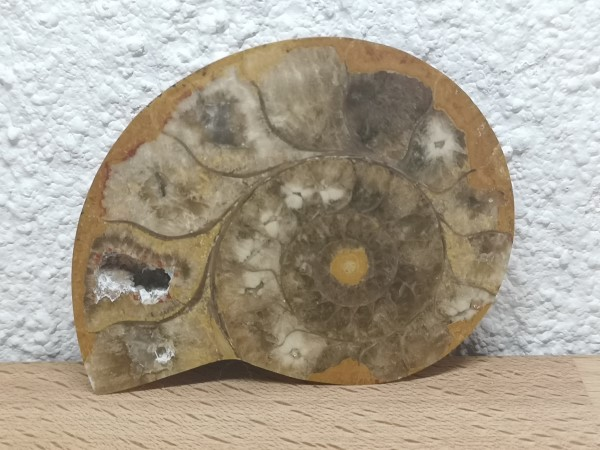
| Gesteinsname: | fossile Amonit-schale |
| Erkennbare Dinge: | versteinerte, kalkhaltige Amonit-schale |
2 / 9
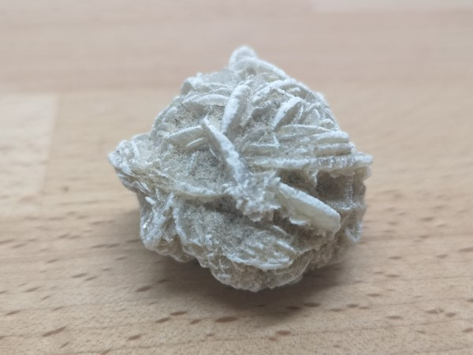
| Gesteinsname: | Sandrose |
| Erkennbare Dinge: | Kombination von Sandkörner und Gips/Baryt führt zu dieser Form |
3 / 9

| Gesteinsname: | Biomikrit (Glovelier, JU) |
| Erkennbare Dinge: | Diverse Muscheln in Kalkschlammiger Matrix |
4 / 9
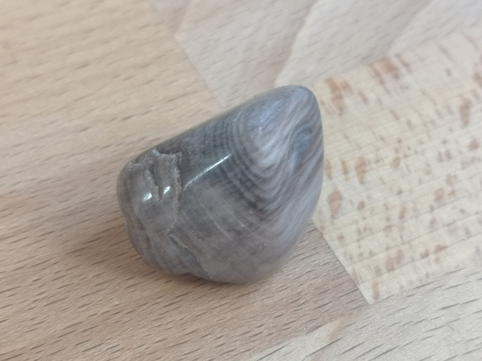
| Gesteinsname: | Holzfossil |
| Erkennbare Dinge: | verkieseltes Holzstück |
5 / 9
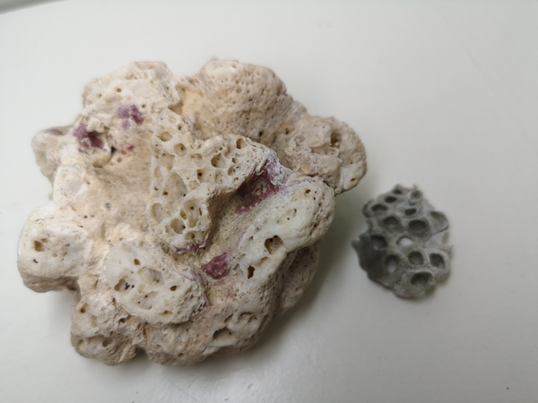
| Gesteinsname: | Biolitith |
| Erkennbare Dinge: | Versteinerte Koralle |
6 / 9
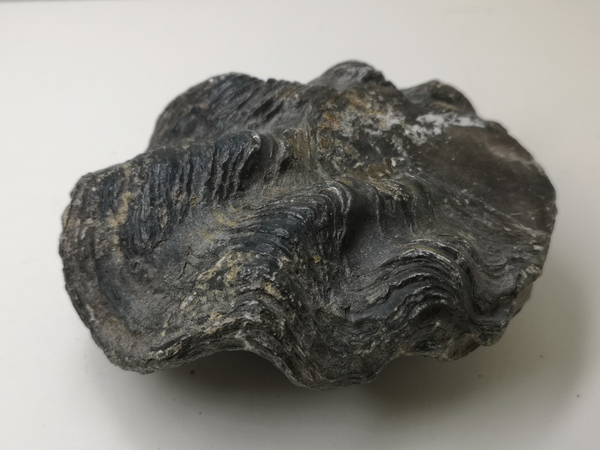
| Gesteinsname: | Versteinerte Muschel |
| Erkennbare Dinge: | Versteinerte Muschel mit deutlichem Schalenmuster und Form |
7 / 9
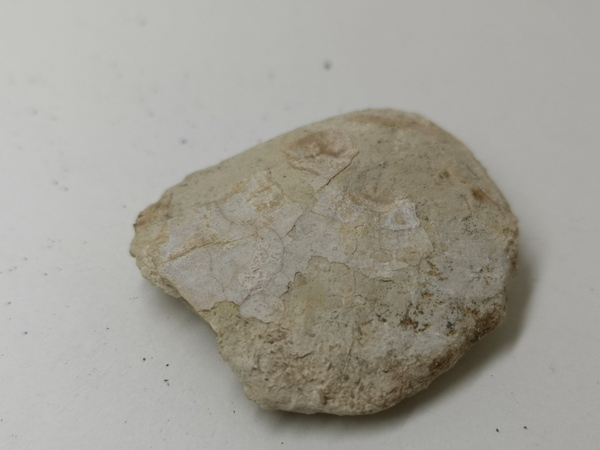
| Gesteinsname: | Versteinerter Muschelkern (Glovelier, JU) |
| Erkennbare Dinge: | Versteinerte Muschelkern (Streng genommen silikatischer Natur) |
8 / 9
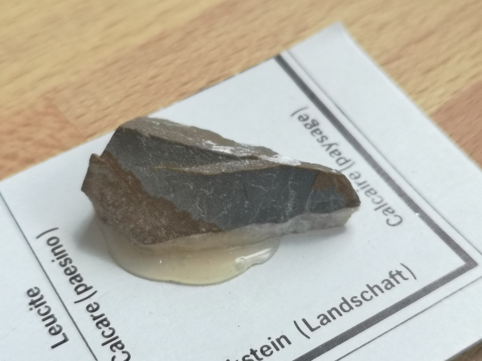
| Gesteinsname: | Kalkstein |
| Erkennbare Dinge: | - |
9 / 9
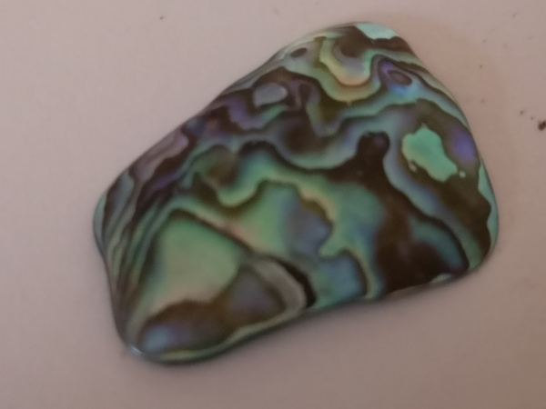
| Gesteinsname: | Perlmutt Muschelschale |
| Erkennbare Dinge: | Schimmernde Farben wegen Interferenz des Lichtes auf Oberfläche |
Gesteine vulkanischer Herkunft
1 / 4
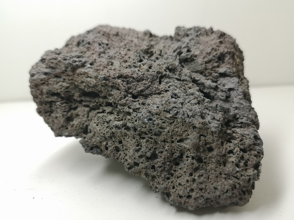
| Gesteinsname: | Basaltischer Pyroklast |
| Erkennbare Dinge: | Blasenartige Struktur, dadurch sehr leicht |
2 / 4
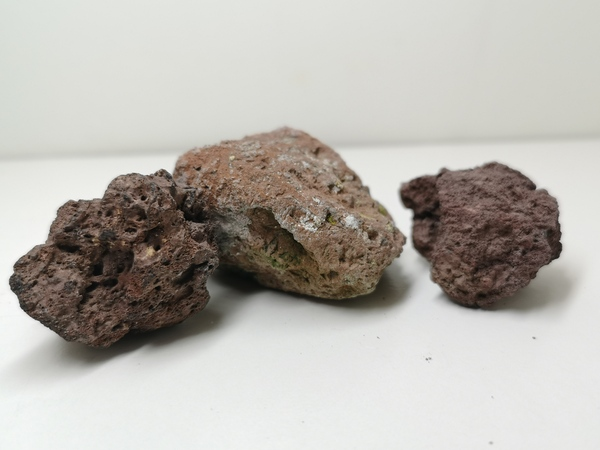
| Gesteinsname: | Rhyolitischer Pyroklast |
| Erkennbare Dinge: | Blasige Struktur, dadurch sehr leicht |
3 / 4

| Gesteinsname: | Schneeflocken Obsidian |
| Erkennbare Dinge: | Rekristallierte mikrokristalline Minerale bilden Schneeflocken- muster |
4 / 4
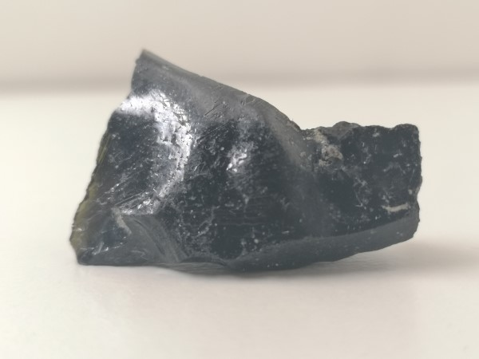
| Gesteinsname: | Obsidian |
| Erkennbare Dinge: | Vulkanglas |
Plutonite

Metamorphite
1 / 5

| Gesteinsname: | Unakit |
| Erkennbare Dinge: | Epidot(grün), Quarz und Orthoklas(Rot), durch Metasomatose umgewandelt. Lieblingstein von Andi |
2 / 5
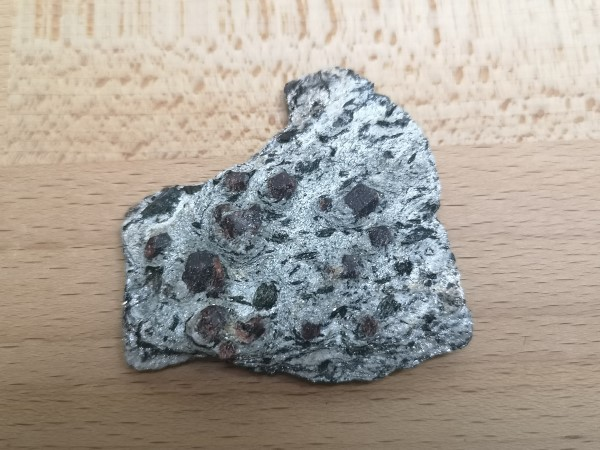
| Gesteinsname: | Granat-Schiefer (Val Bedretto, Ti) |
| Erkennbare Dinge: | Almandin (Granat, Rot/Braun), Biotit (schwarz), Muskovit (Silber). Durch hochgradige Metamorphose umgewandelt |
3 / 5
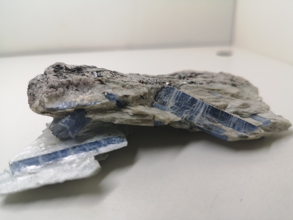
| Gesteinsname: | Kyanit-Schiefer (Pizzo Forno, Ti) |
| Erkennbare Dinge: | Kyanit (Blau), Biotit (schwarz), Muskovit (Silber), Staurolith (Braun, Schwarz) |
4 / 5
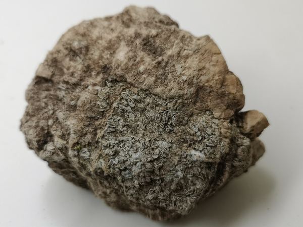
| Gesteinsname: | Metamorpher Biomikrit (Wirzweli, NW) |
| Erkennbare Dinge: | Kleine Muscheln, die metamorphisiert wurden durch Tektonische Prozesse |
5 / 5
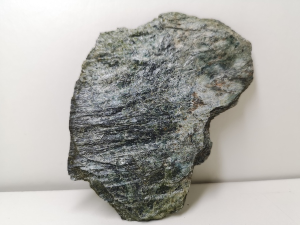
| Gesteinsname: | Serpentinschiefer / Serpentinit |
| Erkennbare Dinge: | Peridotit, welcher umgewandelt wurde. Schieferartige Struktur |